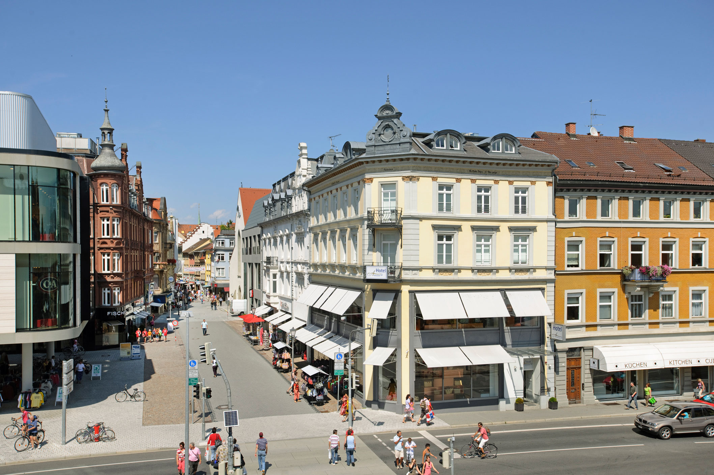
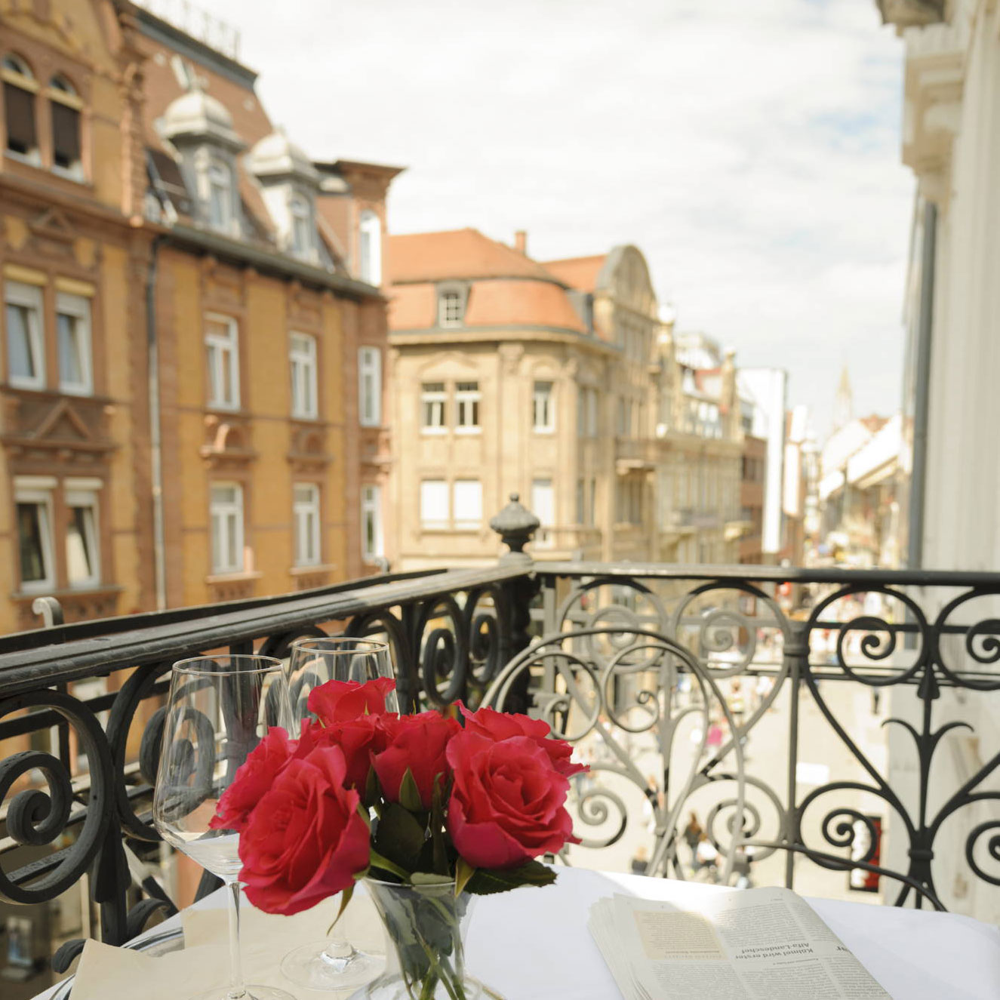
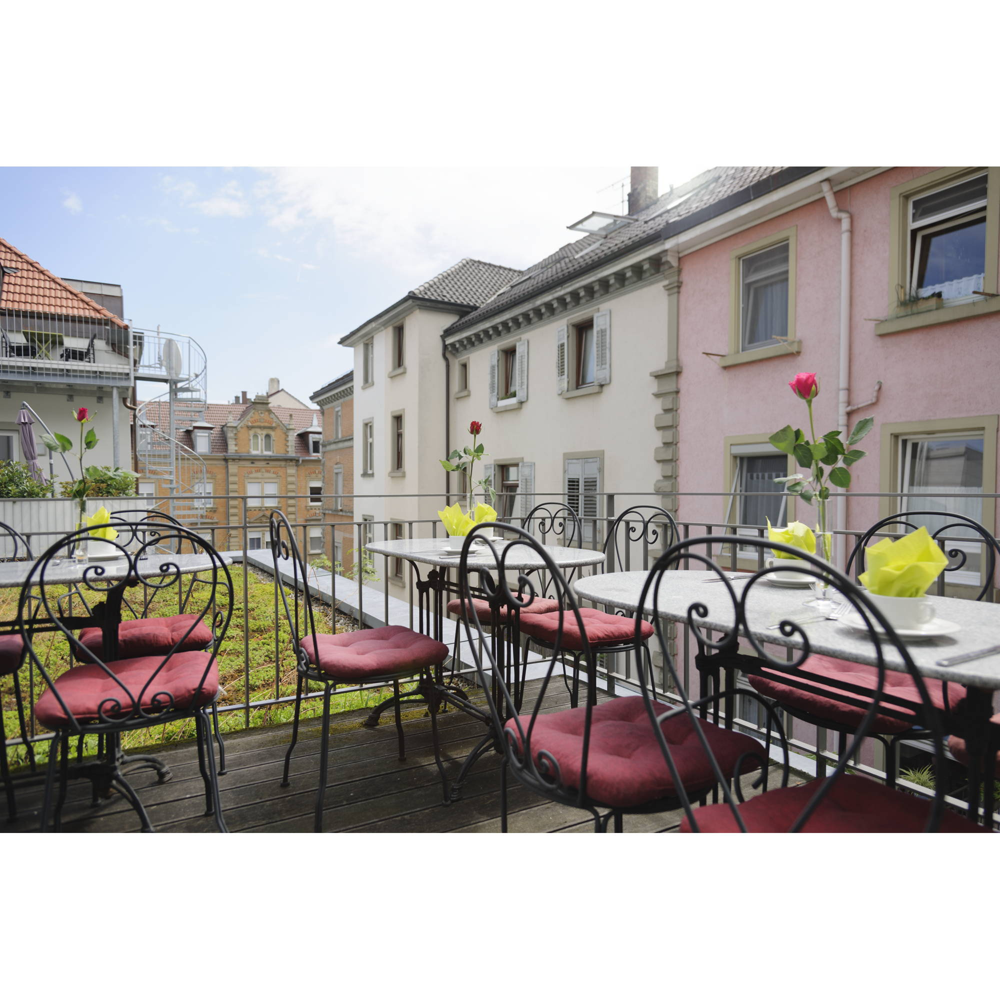
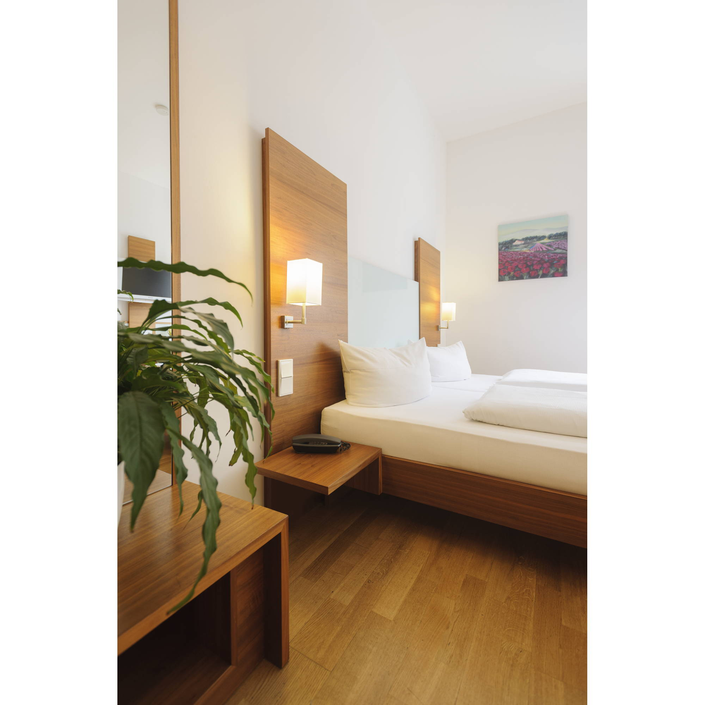
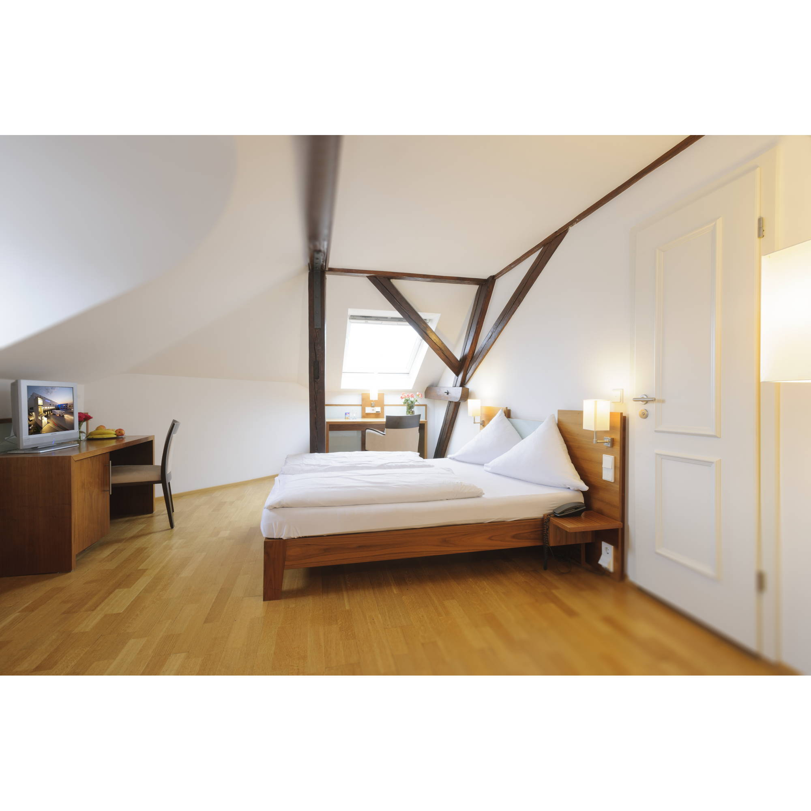
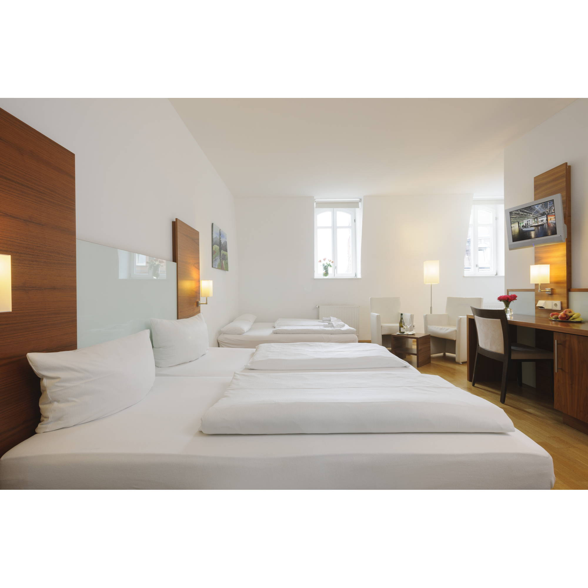
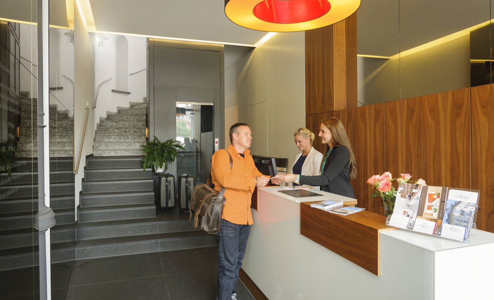
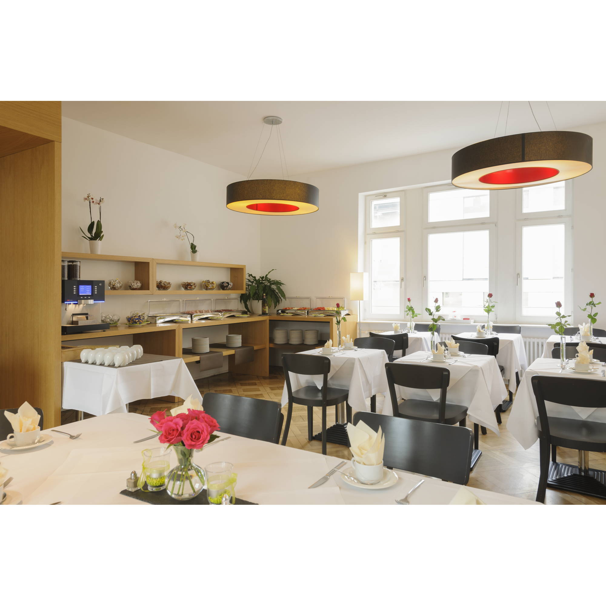
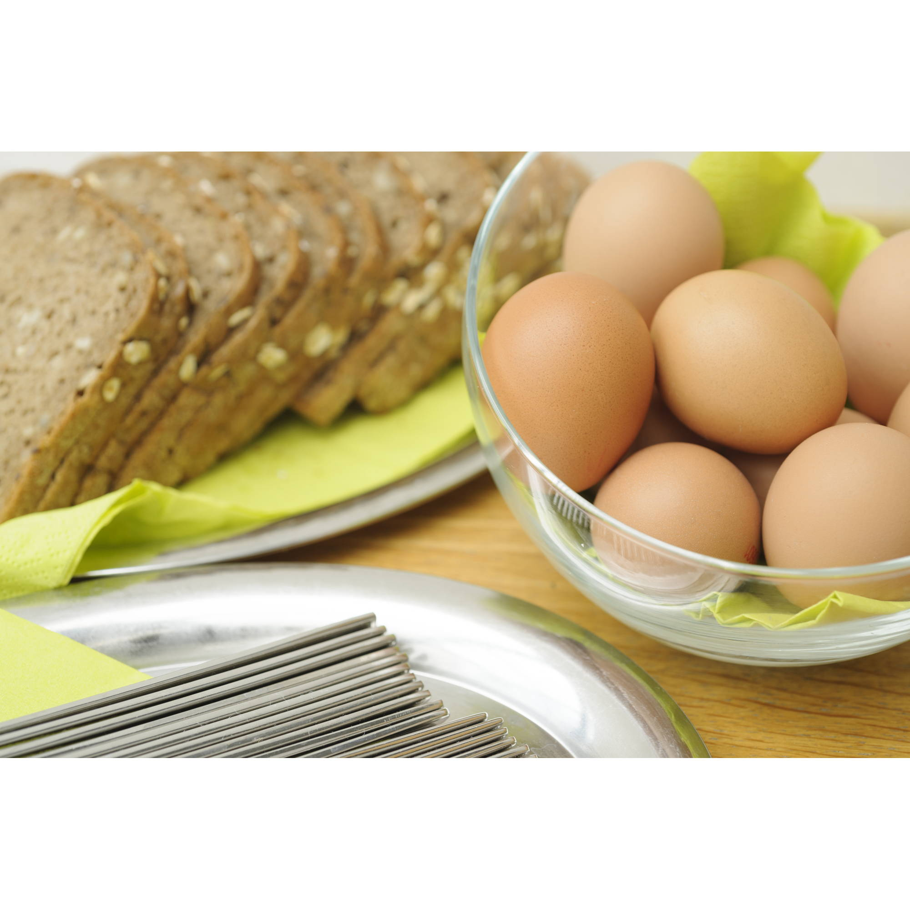

01 · Direkt vor der Tür
Altstadtflair.
Die Fußgängerzone beginnt nur rund 100 Meter vom Hotel entfernt. Geschäfte, Cafés und Sehenswürdigkeiten liegen auf Ihrem Weg.
Eine persönliche Arbeitsprobe von Hotelfreunde. Bitte geben Sie das Passwort ein.
Das Passwort ist nicht korrekt.
Ihr Stadthotel in Konstanz am Bodensee
Moderner Komfort, persönliche Gastfreundschaft und die Altstadt direkt vor der Tür – für entspannte Tage am Bodensee.
Das Augustiner Tor
Im Herzen von Konstanz verbindet unser privat geführtes Hotel modernes Ambiente mit zuvorkommendem Service. Altstadt, Hafen und Bodensee erreichen Sie bequem zu Fuß – und nach einem erlebnisreichen Tag wartet ein ruhiges Zimmer auf Sie.

02

„Konstanz beginnt direkt vor der Haustür.“
Konstanz erleben
Vom ersten Kaffee bis zum Abend am Wasser: Dank der zentralen Lage entdecken Sie Konstanz entspannt zu Fuß.
Die Fußgängerzone beginnt nur rund 100 Meter vom Hotel entfernt. Geschäfte, Cafés und Sehenswürdigkeiten liegen auf Ihrem Weg.
Der Bodensee, die Seepromenade und der Konstanzer Hafen sind in wenigen Minuten erreicht.

Auch Kreuzlingen und die Schweizer Grenze liegen ganz in der Nähe – ideal für einen Ausflug über die Grenze.
Zimmer & Suiten
29 individuell eingerichtete Zimmer und 3 Juniorsuiten verbinden klare Formen, warmes Holz und den Komfort, den es für eine erholsame Nacht braucht.




Persönlicher Service · Privat geführt


Guten Morgen
Nach einer erholsamen Nacht erwartet Sie ein vielseitiges Frühstück. Im lichtdurchfluteten Wintergarten oder auf der Sonnenterrasse beginnt der Tag so entspannt, wie ein Aufenthalt am Bodensee sein sollte.
Unser Versprechen
„Gastfreundschaft nehmen wir wörtlich. Unsere Spezialität ist Ihr Wohlbefinden.“Hotel Augustiner Tor · Konstanz
Senden Sie uns Ihre Wünsche für Ihren Aufenthalt. Diese Konzeptseite zeigt den Ablauf einer persönlichen Direktanfrage.